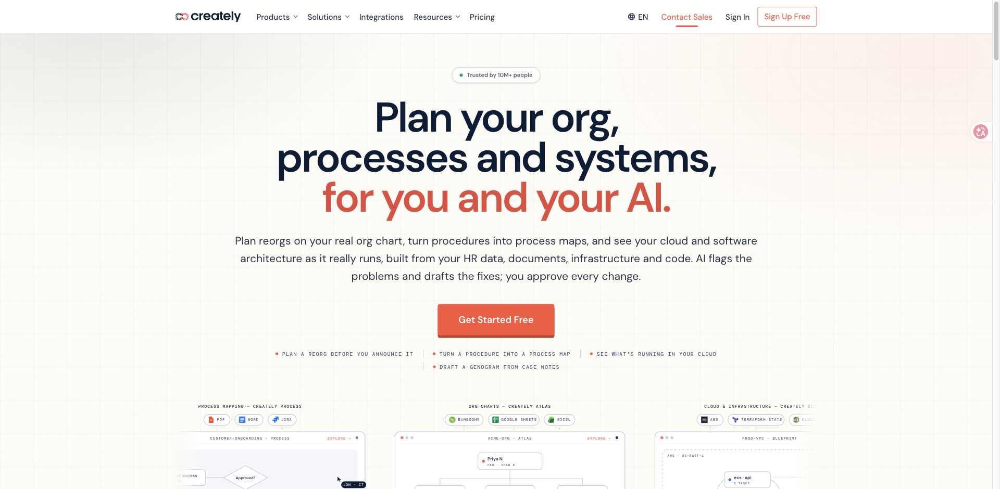

把流程、组织架构和云上系统画在同一套可视化工作区里，并交给 AI 一起维护。
复刻一张「BPMN 采购审批流程」，三泳道 + 左侧形状库
Creately 的视觉语言：标准 BPMN —— 圆角矩形任务、带 × 的菱形网关、细描边圆形事件、虚线消息流，套在三条泳道里；填充用紫 / 青 / 橙的柔和色块，靠颜色区分角色而不是靠线。左侧常驻形状库，图型切换是标签式的。

在线可视化协作工具，覆盖面比纯画图更宽：流程图和 BPMN、组织架构、云架构、思维导图、线框，还带自定义数据库和 wiki 式文档。近年的方向是从 HR 数据、流程文档、云账号里自动生成图，再由 AI 标问题、给修正建议。
典型用户是业务分析师、流程/运营团队和 IT 架构，而不是纯设计师。